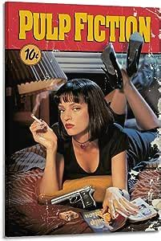

|
 |
Pulp Fiction (1994)Directed by Quentin Tarantino 154 min · Crime, Drama |
At a glance
| Official title | Pulp Fiction |
|---|---|
| Release date | 14 October 1994 (United States) |
| Release year | 1994 |
| Original language | English |
| Country of production | United States |
| Runtime | 154 minutes |
| Genre | Crime, Drama |
| Director | Quentin Tarantino |
| Screenwriters | Quentin Tarantino (screenplay); Quentin Tarantino and Roger Avary (stories) |
| Production companies | Miramax, A Band Apart, Jersey Films |
Plot synopsis
The lives of two hitmen, a boxer, a gangster and his wife, and a pair of diner bandits intertwine in several tales of violence and redemption in Los Angeles.
Main cast
- John Travolta
- Samuel L. Jackson
- Uma Thurman
- Bruce Willis
- Ving Rhames
- Harvey Keitel
- Tim Roth
- Amanda Plummer
- Christopher Walken
Awards and nominations
- Won the Palme d'Or at the 1994 Cannes Film Festival.
- Won the Academy Award for Best Original Screenplay (Quentin Tarantino and Roger Avary).
- Received 7 Academy Award nominations in total.
Production facts
- Told out of chronological order across several interlocking stories.
- Dick Dale's "Misirlou" is featured in the opening credits.
- Selected for the U.S. National Film Registry in 2013.
- Tarantino and Roger Avary shared the Oscar for the screenplay.